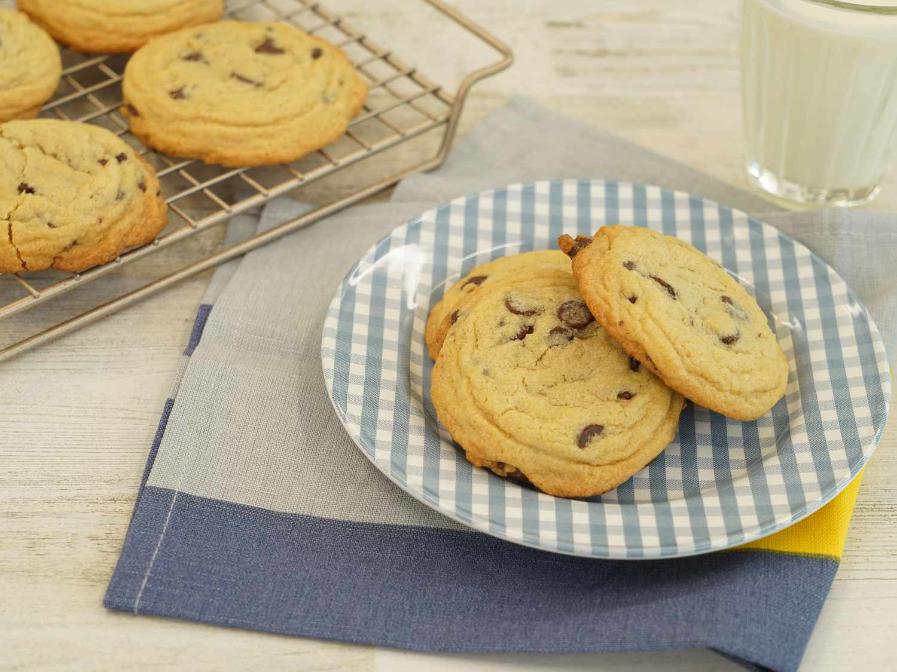

This chocolate chip cookie recipe makes dozens of delicious cookies with crisp edges and chewy middles loaded with chocolate chips!
Gather your ingredients, making sure your butter is softened, and your eggs are room temperature.
Preheat the oven to 350 degrees F (175 degrees C). Beat butter, white sugar, and brown sugar with an electric mixer in a large bowl until smooth.
Beat in eggs, one at a time, then stir in vanilla.
Dissolve baking soda in hot water. Add to batter along with salt.
Stir in flour, chocolate chips, and walnuts.
Drop spoonfuls of dough 2 inches apart onto ungreased baking sheets.
Bake in the preheated oven until edges are nicely browned, about 10 minutes.
Cool on the baking sheets briefly before removing to a wire rack to cool completely.
Store in an airtight container or serve immediately and enjoy!